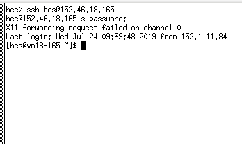

Choose your campus.

Enter your campus ID/Password.
Click on Reservations.
Choose Glide if it's showing, or use the drop-down menu to select it.
A Linux image named Glide has been set up in the VCL (which is the same thing as the VCE) which already has a number of directories and files set up which make for an easy start. (If you don't have access to the VCL, or the VCL image, here's how to set up the equivalent environment.)
You will need to have or make a "Reservation" and then to login to that remote Linux computer through the VCL Click here for a full description. Remember that if you mess up something, for a fresh start you can just delete your VCL Reservation and make a new one.
Choose your campus. |
Enter your campus ID/Password. |
Click on Reservations. |
Choose Glide if it's showing, or use the drop-down menu to select it. |
You've made a Reservation for Glide, and when the "Connect" button shows up, click on it and a pop-up window such as:
Connect to reservation using SSH (Secure Shell)
If you did not click on the Connect! button from the computer you will be
using to access the VCL system, you will need to return to the Current
Reservations page and click the Connect! button from a web browser
running on the same computer from which you will be connecting to the
VCL system. Otherwise, you may be denied access to the remote computer.
Use the following information when you are ready to connect:
Remote Computer: 152.46.18.165 Note: use your reservation's IP address, not this one
User ID: (your-user-id)
Password: (use your campus password)
will give the IP address of the Remote Computer - think of it as the
name of the remote computer. Of course you use the IP address in your
pop-up window, not the one in this example.Next we need to have a terminal/command window from the remote computer show up on your screen. How this is done depends on the operating system of your local computer and the software installed on your local computer.
|
|
(Another Windows method is to use Remote Desktop Connection app. But this requires the remote Linux computer to have some special software installed and so won't work in many (most?) cases. That's why it's not used here.) |
|
At this point you're logged into the remote Linux computer in the VCL.
(The top line in the window shows your ssh login command, using your ID
and the IP address from the pop-up window.) The terminal/command window should be placed to the side of this browser window so you can see both and easily go back and forth. You may have to make the browser window somewhat narrower than usual. Don't be concerned about the X11 or other stuff showing after your login line and above the command line where you will work. (For those people who intend to use the HPC: The VCL image for this tutorial is very similar to a login node in the HPC but you don't need an HPC account. Also you don't interfere with HPC research usage while you are experimenting and learning.) |  |
Now go to the Easy Glide into Linux!